Konkan Bike Tour (2022)¶
The Setup¶
At the middle of last year I found myself at a very tricky spot. Work started to be weird. I knew that the ending was near. As the end of the year approached, I sort of started looking elsewhere and I found a spot with some folks that I had already known. So I resigned from Druva during November, and December something was my last day at druva.
Very soon I found myself with 3 weeks of idle time. A bike trip was the last thing on my list, mainly because I didnt not have a proper luggage setup and more importantly, I promised myself that I would not take the bike on any long distance trip if I had less than 1000kms on the odometer. As this was my first bike, the distance on the odo is also my total experience with a two-wheeler.
Things changed when a friend sent me his old Viaterra claw luggage. It arrived and I was off in 3 days time.
The Route (as planned and the changes that happened)¶
The route from Pune to Gokarna via the coastal roads was something that I had planned previously as well, for a bicycle trip. The only thing that changes with the motorcycle is how many kilometres do I cover on a single day.
On a bicycle a respectable and more important sustainable mileage is about 100kms per day.
On a bike, for me, that number is close to 400kms. (though I have never done 400kms) on a single day. My personal best is 360kms which happened when I took the bike to Mumbai and back to Pune on a single day.
This is roughly how the route looked.
- Pune -> Ganpatipule (via mahabaleshwar, Chiplun and Jaigad (308 kms)
- Ganpatipule -> Tarkali (170kms)
- Tarkali -> Palolem (182 kms)
- Palolem -> Belgavi (147kms)
- Belgavi -> Pune (350kms)
Here is a link to Google Maps. The entire route is marked as layers and available. You can also download the gpx/kml files.
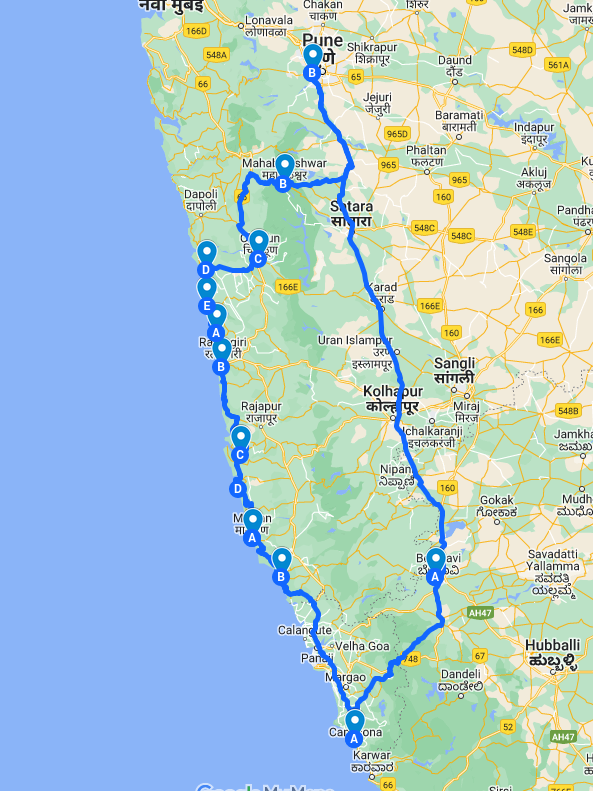
This is it. <3
I planned different activities on the trip, so I wasn't just riding in the day and sleeping in the night. I kept the daily mileage to less than 200 kms on most days. I wanted to save some time and energy to do other stuff. Most of the evenings were packed with other activities.
Mahabaleshwar was added to the itinerary of day-1 just 1 day before leaving. My colleague told me about strawberry and cream (a desert that is very famous in mahabaleshwar) and I could not refuse. Moreover, it added only about 20 extra kilometers to the total distance for day-1. It was ok.
A friend recommended a scuba diving school in Tarkali and I jumped on the opportunity and decided to give it a shot. This needed pre-booking and the owner also helped me find a decent place to stay. It was great!
I was supposed to go to Gokarna, but I was not able to find a hostel in time, hence I booked the first hostel that I could find using google-maps as I scanned upwards from Gokarna. As luck would have it, an old friend from school was also staying at Palolem during the exact dates and we hung out after more than 5 years.
Belgavi was also fun, I decided to attend Science Hack Day. That was the designed stop.
Soon, the plan came together like a jigsaw puzzle. For my first multi-day bike trip, this wasn't too bad.
I was scared though. A lot of things could go wrong. I was severely under-prepared for mechanical failures.
The Execution¶
Day 1: Pune to Ganpatipule [ Dec 20, 2022 ]¶
Ganpatipule is a temple town on the west coast. It is a very small town. My friends suggested that I didn't need to fix my stay beforehand and I could just roll into the town and find a place to stay. My paranoid ass did not let me do this. I instead found a cheap hotel for the night on MakeMyTrip. With the destination set, I had one thing less to worry about.
At about 6am in the morning, I loaded up the bag, put on my jacket and started.
To go Mahabaleshwar, you take the Pune-Bangalore highway and then exit from the highway just before Satara. The highway was nice and boring. I always find highways to be extremely boring.
Things became interesting once we got off the highway. We moved to a double-track road from a 6 lane protected highway. The speed reduced considerably. Soon the ghats began. This part of the trip was amazing. The rolling ghats of Mahabaleshwar was amazing.
What really surprised me was the abundance of strawberry and strawberry related imagery. I saw shops, cars, houses etc decorated with pictures and models of strawberries. I also saw strawberries being sold on the road-side in bulk. Till this moment, i had seen strawberries being sold in boxes-of-6 at the local market. I however, co'uld not buy some because I was travelling.
On arriving at the "Mapro Garden" I took a much needed break and had the "Strawberry with Cream". It was amazing. Probably one of the best strawberries I've ever had. I never knew that strawberries could be so sweet!!! I used the facilities and left this place soon enough. The other half of the trip was still remaining for the day.
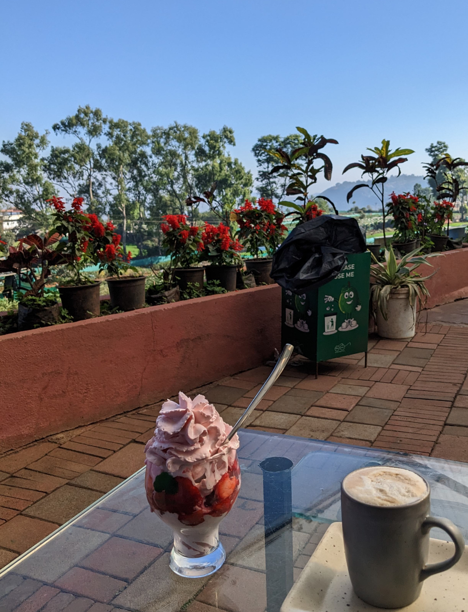
Here is a photo of the desert and coffee. (The coffee was bad)
I left soon after, as it was getting late. What followed was some of the best ghat section I've ever come across. I stopped and took a LOT of pictures. This is where most of my time was spent.
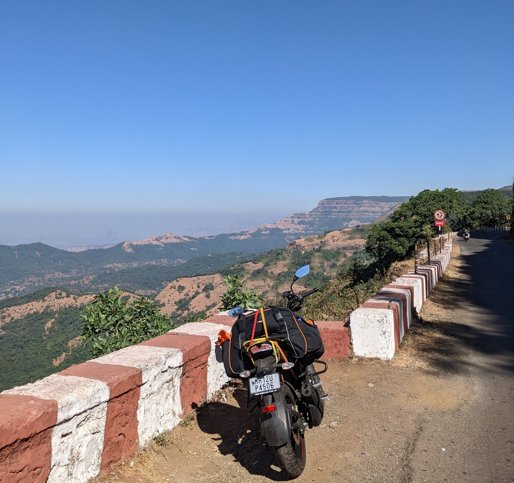
The photo does not do justice.
During the dry season, you can see the layers of rocks on the Deccan plateau. It looks like a multi-layered cake.
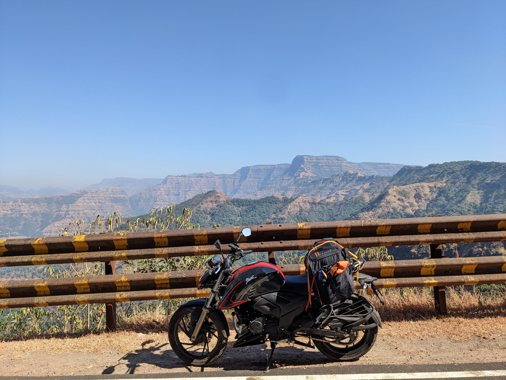
LOOK at those layerssss!!!!
After exiting the ghats, I decided to head to Chiplun instead of Dapoli as planned as going to Dapoli would take some time and I did not want to ride in the dark. I was feeling quite tired already. After Chiplun, I took a left and kept going towards Guhagar, and then took a left towards Jaigad. These roads were very small and they followed the contour of the hill very closely. Riding in these roads was very engaging, requiring a lot of clutch and gear adjustments. I was enjoying this thoroughly. The sea was very close. You could smell it. This particular smell would be constant companion for the rest of the trip.
There were sections in which the road had to cross a river that was emptying into the Arabian sea. To do this, the road would descend steeply to the sea-level where we would find a small bridge. Once you cross that bridge, the road would rise again. This happened some ⅔ times throughout the entire trip. During these "dips" (as I like to call them), I passed through multiple small fishing villages. I have a photo of one such village during a low-tide. It looks rather interesting.
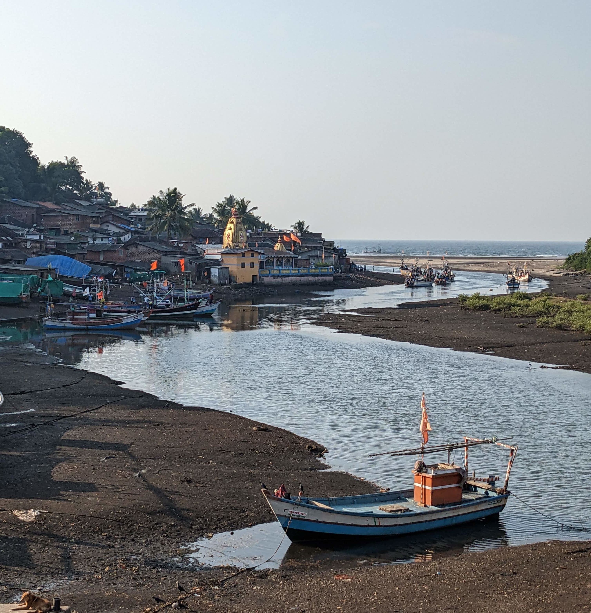
In Jaigad we had a Ferry ride. I was looking forward to this part of the trip very much. I arrived just in time. The ticket cost me about 100 rupees for both myself and the bike. I met three other people on their motorcycles too. They were going to Goa as well. However, they were too experienced and too fast for me. So I decided not to follow them.
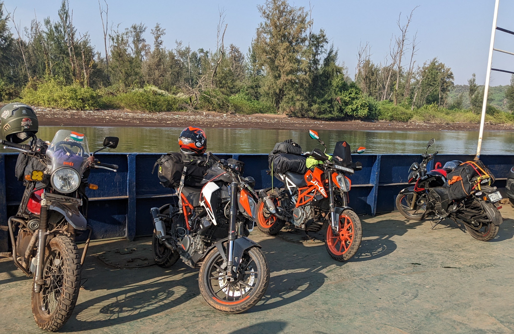
This group was fun. We chatted a bit. That is my shadow taking the pic.
On the other side of the ferry, things became very very interesting. Now, the road didn't climb onto the hill, instead it continued lazily along the sea. This geographic feature led to some amazing views. There was a point, where the hill on the left and the sea on the right were separated only by the road. Like you could walk from the sea onto the hill in less than a kilometre. This blew me away. I stopped the bike and kept looking at this for some time. It was lovely.
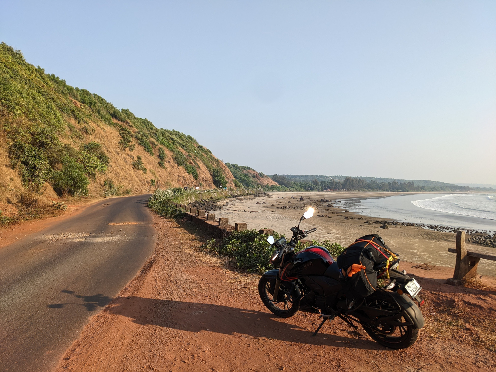
What did I tell you :-) ?
The lodge was decent-enough. You can not and should not expect anything better at this price point. All I needed was a place to keep the bike and a place to sleep and shower. Fortunately the owners were quite cool about the bike. They had a decent parking facility. They were also kind enough to provide me with some hot water for the next day's early morning coffee. After checking-in I went to the beach and spent a couple hours there.
Being a temple-town, there is a lot of "pure-vegetarian" food places. However being a coastal town, fish is a major part of thir diet. It was interesting to observe this dynamic. Most restaurants had 2 versions of itself, often seperated by a floor or some walls etc. One part would be completely vegetarian and the other part was completely non-veg. I had a fish-thali here. It was fresh and expensive and delicious.
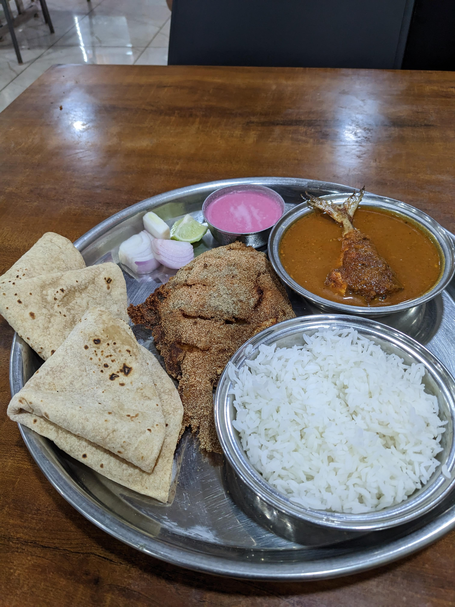
That day I retired early and went to bed. The next day I started at around 8 am. The distance was less, but I also had a serious deadline. I had to reach the scuba place before 1 p.m. if I wanted to experience the larger tour.
Day 2: Ganpatipule to Tarkali [ Dec 21, 2022 ]¶
The ride was very easy this day. We drove through some narrow roads and passed a lot of bridges and fishing villages. We reached Tarkali in about 5 hours and checked-in to the stay.
The stay was at this lovely establishment run by this person since 2002. We spent some time chatting. He said he started with a single room to rent out and then slowly grew the property to about 14 rooms in the span of 18 years. He was strictly against loans from banks and instead relied on savings to fund his growth; he boasted that this is how he survived through covid, where tourism was at an all-time-low.
He proudly mentioned that his wife was his main support during these years and that without her support, he would not have been able to expand his business. The boasted that he was planning to build a swimming pool next. I was the only visitor to this property during this time, so we had a lot of time to chat.
The property was adjacent to his house in-fact they shared the same compound and kitchen. The visitors were treated to the same food that the family prepared for themselves. So when he asked if I wanted to have dinner that night, I did not refuse.
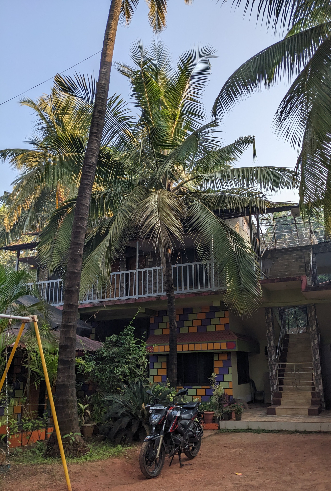
This is just a part of the whole stay. There are room adjacent to the building in the photo.
After checking-in, I cleaned up a bit and went to the scuba thing. Since I had a decent amount of time before sundown, I decided that I wanted to have the longest possible tour.
The setup was such; we were given wet-suits and put on a boat. The boat would then take us to a spot where we would do some basic training. After that we would do a couple dives in different parts of the sea.
We started with some snorkelling exercises so that we can familiarise ourselves with the mechanics of breathing with a mask on. It took some time to get used to this, but afterwards, it was very easy. After this, we were given a very short training of some hand-signals and how to use the breathing apparatus underwater. Everything was supervised as the instructor would always be there with you.
We did a couple of dives near the Sindhudurg fort. The corals that we saw were all dead. What surprised me was that the entire activity was purely focused on photography. The instructors had an underwater camera and food for the fishes. They would prepare a shot and then use the food to bait the fish into the frame. This is how most of the pictures with the fishes were taken. There was a couple with me on the boat and they even had a couple's photo-shoot package. They made the couple pose cutely underwater and took photos and videos of it. This lasted for about 3 hours where we went to different parts of the sea using the boat and spent anywhere from 30 mins to 45 mins underwater.
After all this was over, the photographs were promptly transferred to our mobile phones using a USB pen-drive. After this, we were dropped back on the sea beach and we could do whatever we wanted to do.
I spent some more time walking on the beach and picking up dead blowfish that the sea bestowed upon the shore.
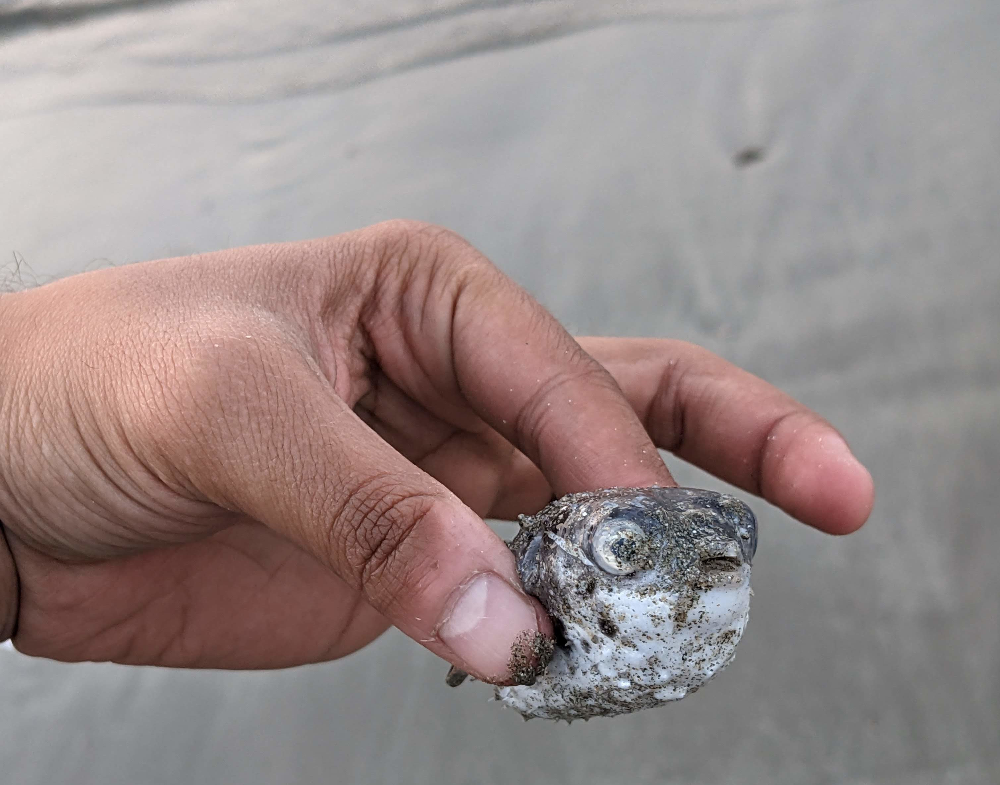
There were a LOT of dead fishes. Not sure why.
Slowly, I watched the setting sun against the backdrop of the Sindhudurg fort. It was magical. I waited a while longer for darkness to settle in.
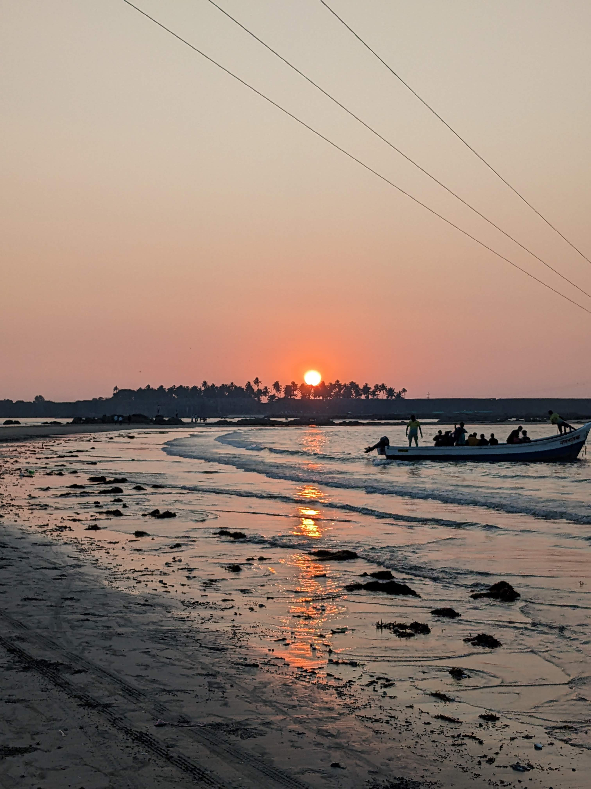
Back at the stay I was treated to the best Konkan thali I've ever tasted. The food was tasty and delicious. They also gave me one extra Bangda (Indian Mackerel) and he would not accept payment for it. The solkadhi I had was also amazing. Apparently his wife's family had a secret recipe passed down the generations for this solkadhi.
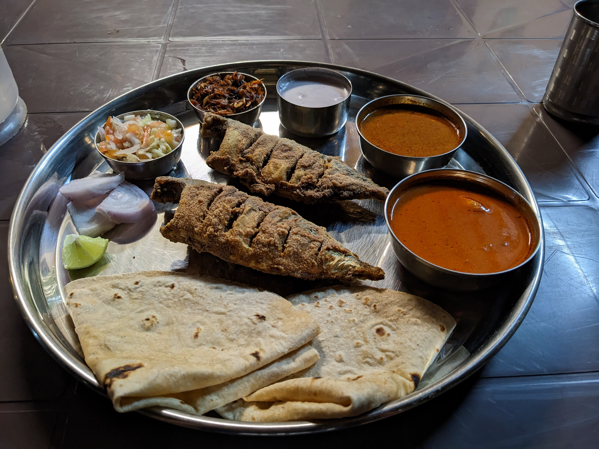
That white thing in the small bowl is the Solkadhi. It is not as red in color, but It was supremely flavorful.
After diner I spent some time cleaning and lubing the bike chain. It had seen almost 500 kms of very dusty roads and I had nothing better to do other than sleeping.
I slept soon after.
Day 3: Tarkali to Palolem (182 kms) [ Dec 22, 2022 ]¶
From a motorcycling perspective, this was one of the most difficult and terrifying part of the entire trip. During the short time I've been riding, this leg was the part where I felt the most uncomfortable and ill-equipped. This day was truly challenging.
I followed the coastal route from Tarkali, passing through the Sindhudurg Airport and Vengurla beach. Most parts of this leg of the journey has very very isolated sections of road and unlike the other parts of the journey, the roads were is very bad shape. I remember riding through a very sketchy 40km section where I did not witness one other human being. The road at this stretch was almost non-existent and broken, it wasn't dirt, it was just loose rocks. The bike was running in 2nd gear throughout.
After this section, I did pass through some bridges overlooking some beautiful fishing villages. Some photos
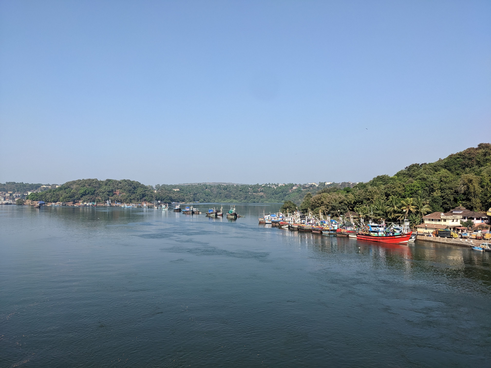
This was taken from a bridge. Looking to the village towards my right side.
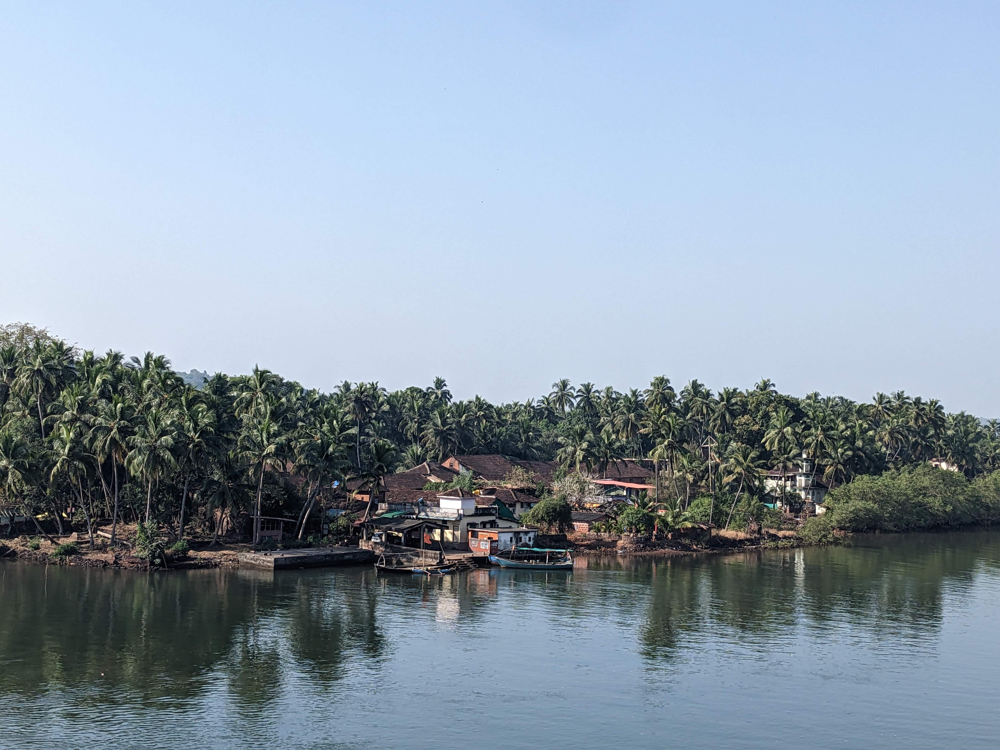
This was on the other side of the bridge.
After this I decided that I needed to get off of this road and get onto the highway. I don't remember exactly where, but I got onto NH-66 somewhere between here and reaching Palolem. NH-66 was boring, but it was quite a bit of relief. The road conditions were so bad that I did not stop to take photos. After getting on the highway, there was no spot to take photos from. Almost all highways are the same concrete jungles.
Riding in Goa was fun. The roads were beautiful and so was the city. Most of the roads were covered with large trees which was a great sight.
Upon reaching Palolem, I had my first small mishap on this trip. I was reversing the bike and ended up putting the rear wheel into a ditch. One thing led to another and I found a metal part of the bike stuck onto my left calf. Through it didnt injure me too much, it did draw blood. I cleaned the wound after a couple local helped me get the bike out of the ditch. Fortunately the hostel and my stay for the next two days was just nearby. I parked the bike and cleaned up.
I had originally planned to stay for 1 night in Goa, but extended it because me and the friend made some plans for the next day. We spent the entire day drinking and hanging out. We also spent a lot of time just sitting on the beach. This was very different from what I am used to. Initially the idle-ness of it made me very uneasy. I have to keep doing something. However, I got used to it quite soon and relaxing felt nice. This is of-course very different from my usual travelling where I fill every minute with something to do (even walking). We just sat there and witness the setting sun. It was nice.
Day 5: Palolem to Belgavi (147 kms) [ Dec 24, 2022 ]¶
This was the most fun day in the entire trip. I started late in the morning at about 9 am ish. This leg of the journey involved some riding through Mollem National Park and Bhimagad Wildlife Sanctuary. This was the best part. The road was narrow; little bit wider than a single track and in some places it was no road itself. We rode though dirt and stones.
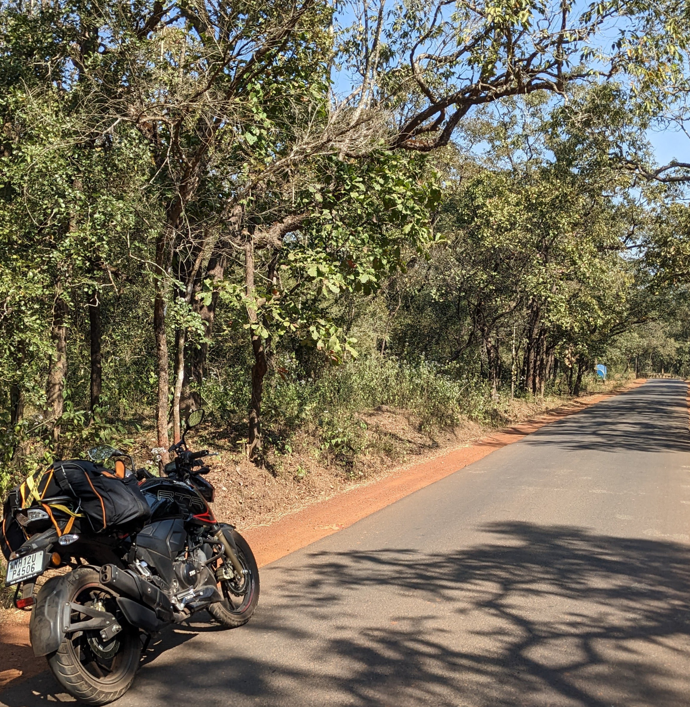
This is how the road was for more than 50 kilometres. It was beautiful.
I met another person who was riding all the way to Mumbai on this Continental 650 is full riding gear. We spoke for a bit and then he was on his way as I couldn't keep up with his speed, pace and skill.
During this leg of the trip, I also encountered some random acts of kindness. At one point, I was behind a large truck which was slowly climbing up an incline. The road was narrow and there was no safe space to overtake the truck, so I was happily minding my own business and waiting for the incline to end. Suddenly the truck moved to the left and the driver waved his hand, indicating that he was letting me pass. I passed him very happily. This happened once during day-2 when a state bus let me pass him on an incline. How wonderful!!!
Day 8: Belagavi to Pune [ Dec 26, 2022 ]¶
This was the most boring day of the ride. Entire trip was spent speeding on the highway. I did cover 350kms this day on a single sitting, which was my personal best so far. The previous Pune-Mumbai-Pune was done in 2 separate trips spread apart by a few hours.
Conclusion¶
- Planning is fun, but execution is funner!!
- Planning lets me be more flexible and be more spontaneous during the trip.
- Doing this trip during the monsoon would be fun.
- Should have packed things in smaller quantities.
- Covered 1181 kms in total.